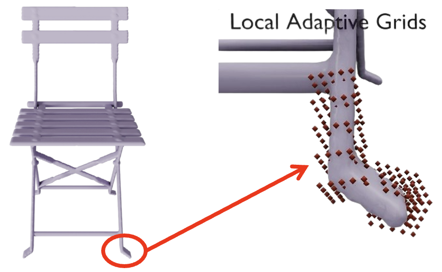
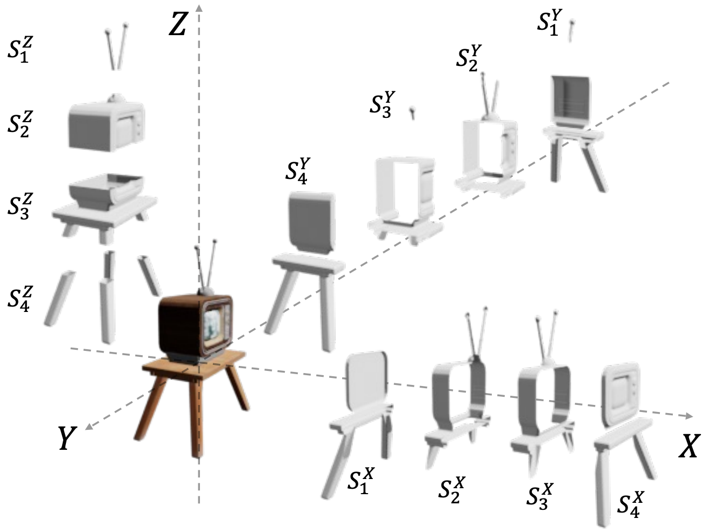
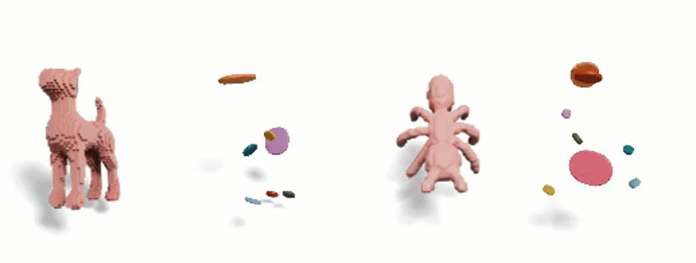
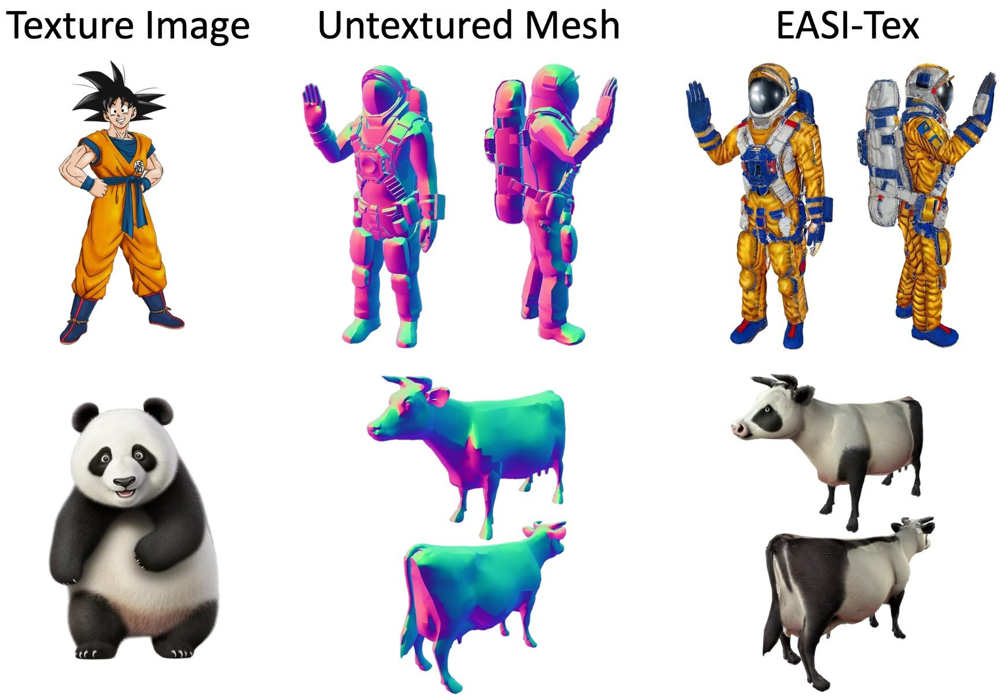
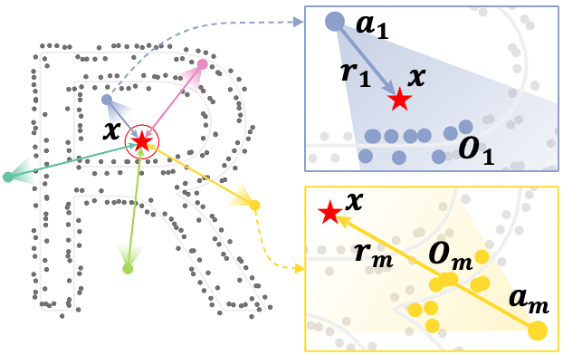
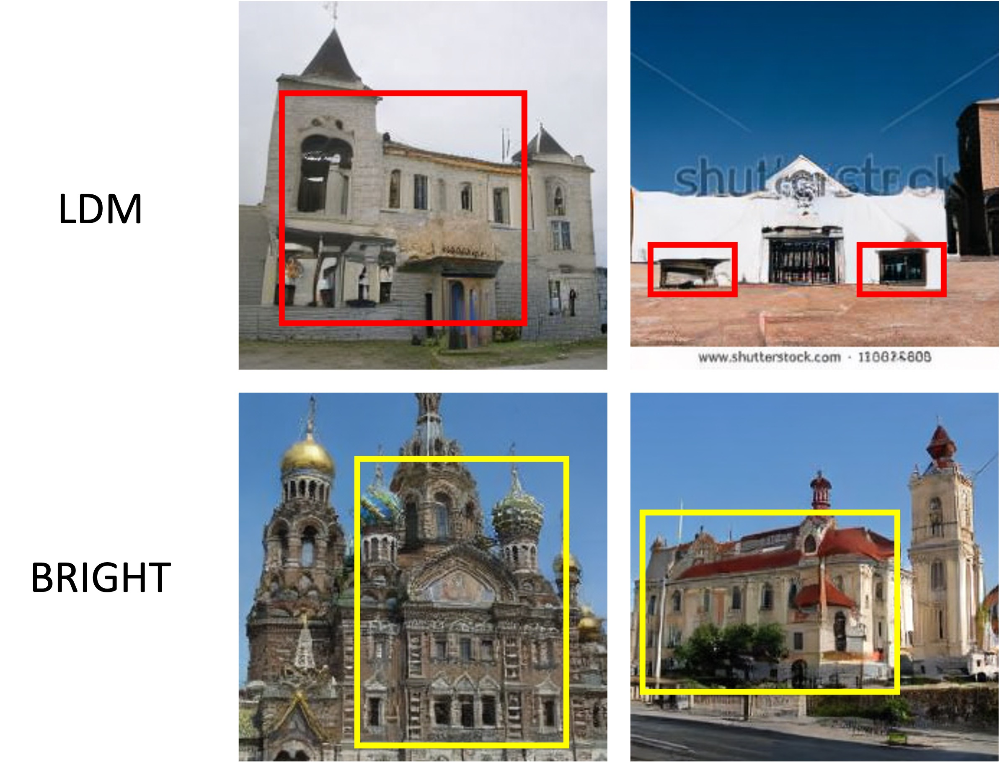
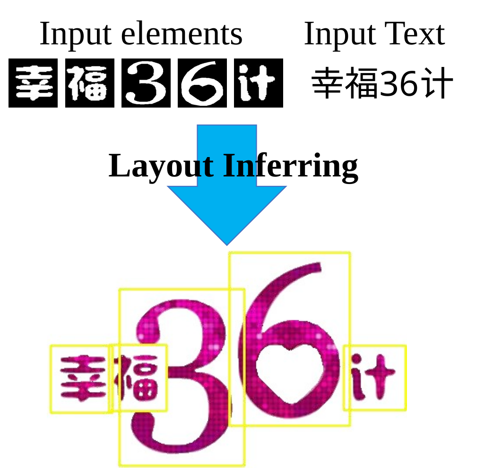
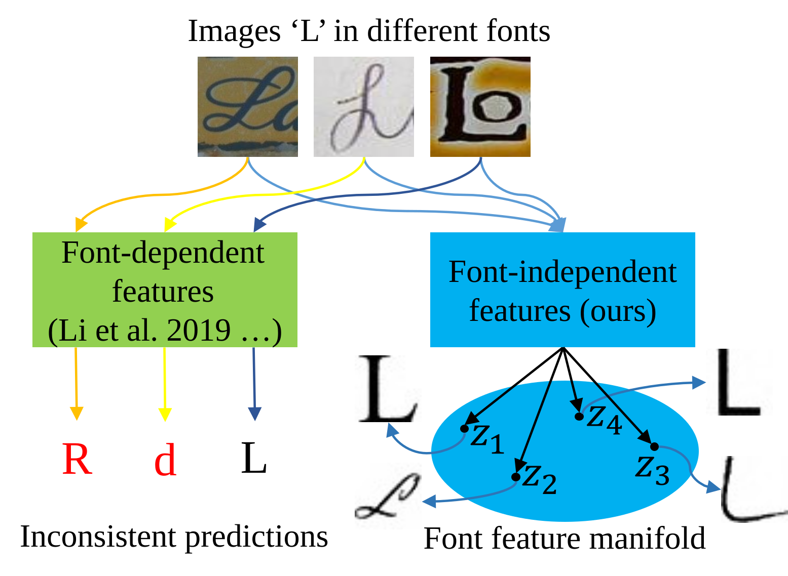
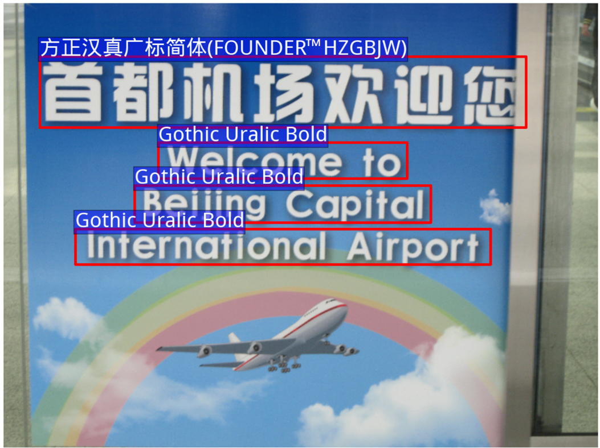

Yizhi Wang (王逸之)
Video synthesis and generation
I am currently a Senior Research Scientist at ByteDance/TikTok, working on video synthesis and generation.
Previously, I was a Postdoc Fellow supervised by Professor Hao (Richard) Zhang in GrUVi Lab at Simon Fraser University (SFU), Canada. During my postdoc, I worked on 3D shape reconstruction and content creation.
I received my PhD degree from Peking University, where I worked on Computer Vision and Computer Graphics. During my PhD, I focused on applying deep generative models to analyze and synthesize 2D geometric data such as glyphs, fonts, and layouts. I was supervised by Prof. Zhouhui Lian and Prof. Jianguo Xiao.
News
- Feb 2026VIVA is accepted by CVPR 2026.
- Jan 2026MAGREF is accepted by ICLR 2026.
- Nov 2025ACT-R is accepted by 3DV 2026.
- Jun 2025Selected as an Outstanding Reviewer for CVPR 2025.
- Jan 2025GALA is accepted by ICLR 2025.
- Jul 2024SweepNet is accepted by ECCV 2024.
- May 2024EASI-Tex is accepted by SIGGRAPH 2024 as a Journal Paper.
- Mar 2024Slice3D is accepted by CVPR 2024. Code has been released.
- Jan 2024I am co-organizing the Workshop on Graphic Design Understanding and Generation in CVPR 2024.
- Dec 2023Introducing Slice3D, a new notion for single-view 3D reconstruction via multi-slice reasoning.
- Jul 2023DS-Fusion is accepted by ICCV 2023. Check out the fun video.
- Jun 2023Check how Christina uses DeepVecFont in her art-design project (Video and Blog).
Representative papers are highlighted.
-

-

-

-

-

-

-

-

-

Experience
-
Mar. 2026 - NowSenior Research Scientist
-
Nov. 2024 - Mar. 2026Research Scientist
-
Jan. 2023 - Nov. 2024Postdoctoral Fellow
-
 Jun. 2021 - Nov. 2021Research Intern
Jun. 2021 - Nov. 2021Research Intern
Service
Journal Reviews
- IEEE Transactions on Pattern Analysis and Machine Intelligence (TPAMI)
- IEEE Transactions on Visualization and Computer Graphics (TVCG)
- Expert Systems with Applications
Conference Reviews
- SIGGRAPH 2026
- SIGGRAPH Asia 2024, 2025
- CVPR 2022, 2023, 2024, 2025, 2026
- ICCV 2021, 2023, 2025
- ECCV 2022, 2024
- AAAI 2022, 2023, 2024
- Outstanding Reviewer, CVPR 2025